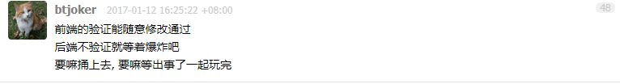
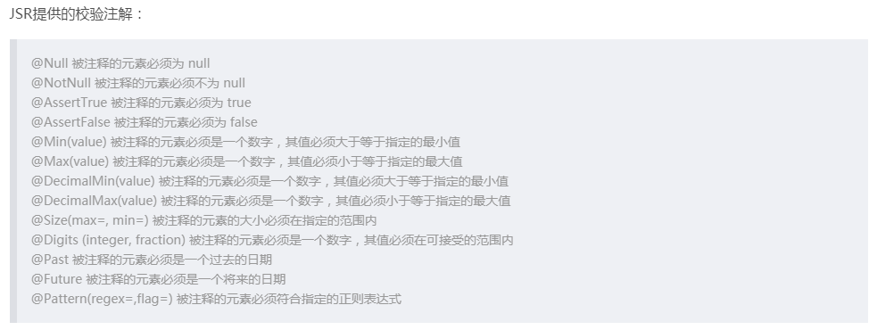
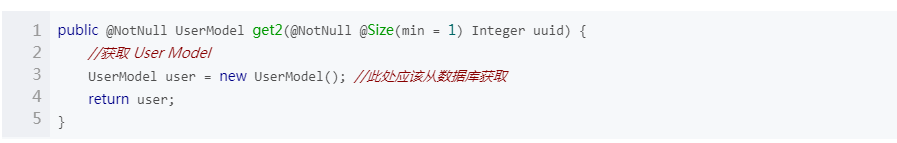
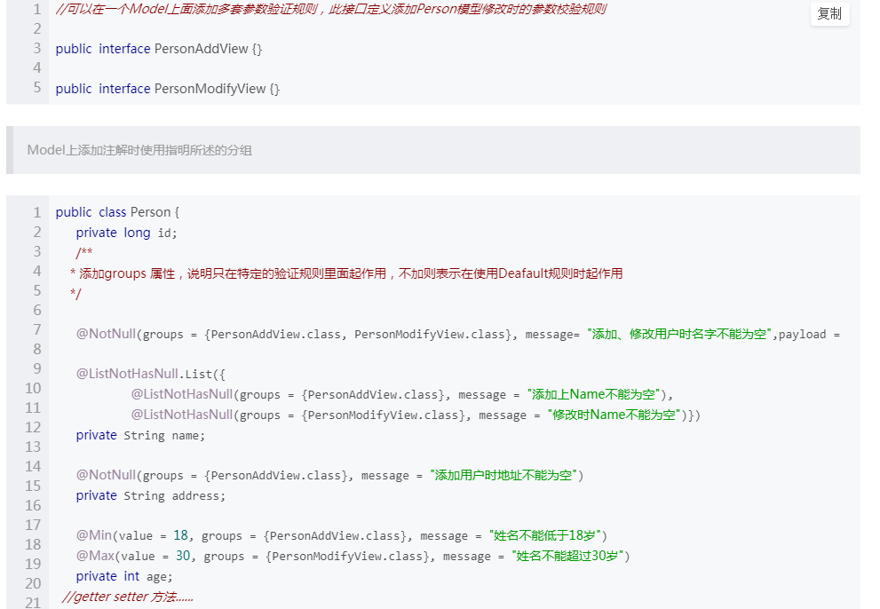

【JAVA-TASK3】Validation 参数校验
分享人：何佳欢
目录
1.背景介绍
2.知识剖析
3.常见问题
4.解决方案
5.编码实战
6.扩展思考
7.参考文献
8.更多讨论
1.背景介绍
大手子说参数验证
参数验证的必要性
“客户端传来的参数都是不可信的”我就是说是行业的一种说法；“后端进行参数校验，是防止别人通过接口乱刷服务”。
绕过js验证的常用方法
- 将页面保存到自己机器上,然后把脚本检查的地方去掉,最后在自己机器上运行那个页面就可以了
- 将引入js的语句删掉,或则将引入的js后缀名更换成任意的名字
- 在浏览器地址栏中直接输入请求URL及参数,发送get请求,就可以了
- postman直接发送请求
如果服务端不验证，那么完全可以在任何连接互联网的地方重写一个没有JS验证的表单，然后提交给你网站的程序，后果可想而知，几乎就是自由出入这就是为什么我们需要做服务端参数校验
2.知识剖析
参数校验的方式
- 表现层验证：SpringMVC提供对JSR-303的表现层验证
- 业务逻辑层验证：Spring3.1提供对业务逻辑层的方法验证
- DAO层验证：Hibernate提供DAO层的模型数据的验证
- 数据库端的验证：通过数据库约束来进行
- JSR-303也提供编程式验证支持
通过 if-if :逐个对参数进行验证，这种方式最粗暴.如果参数一多，就要写n多的if-if，相当繁琐，更重要的是这部分判断没法重用，另一个方法又是这样判断。
自定义注解实现参数校验:切面拦截controller方法，然后捕获带@CheckParam注解方法参数实例，最后反射实例校验。
自定义ValidationUtils:表单验证工具类ValidationUtils，依赖包commons-lang
JSR-303（Java Specification Requests 规范提案）是JAVA EE 6中的一项子规范，一套JavaBean参数校验的标准，叫做Bean Validation。JSR-303用于对JavaBean中的字段的值进行验证，Spring MVC3.x之中也大力支持JSR-303，可以在控制器中对表单提交的数据方便地验证。
3.常见问题
参数类型
4.解决方法
5、编码实战
6、扩展思考
JSR和Hibernate validator的校验只能对Object的属性进行校验
spring 在此基础上进行了扩展，添加了MethodValidationPostProcessor拦截器，可以实现对方法参数的校验
同一Model增加修改的参数不一样

7、参考文献:
https://blog.csdn.net/m0_37499059/article/details/81431562
https://blog.csdn.net/wangpeng047/article/details/41722133
8、更多讨论
谢谢大家~
分享人:何佳欢